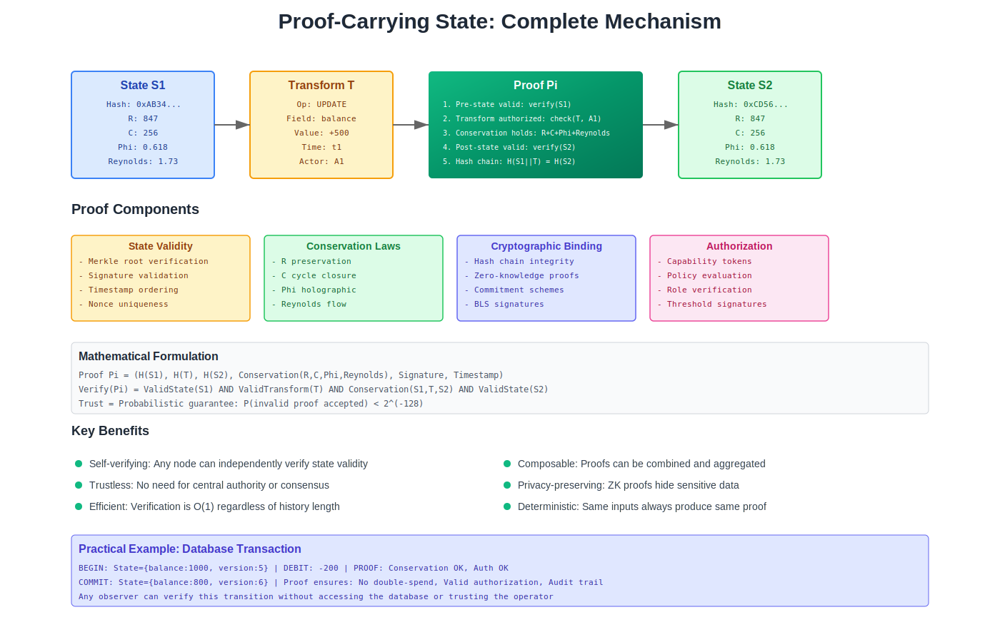

Chapter 5: Proof-Carrying State

Figure 5.1: Complete mechanism showing how every state transition carries mathematical proof of correctness
Beyond Trust-Based Computing
Every interaction in current information systems requires trust. When you query a database, you trust it returns correct results. When you receive data from an API, you trust it hasn’t been tampered with. When a service reports its resource usage, you trust the report is accurate. This trust is supported by elaborate mechanisms—authentication, authorization, auditing, monitoring—but ultimately, you’re trusting that systems behave as claimed.
Proof-carrying state eliminates the need for trust by making every operation mathematically verifiable. Instead of trusting that a system performed correctly, you verify the mathematical proof that it must have performed correctly. Rather than stronger trust, this represents the complete elimination of trust as a requirement.
The Nature of Computational Proofs
What Makes a Proof
In mathematics, a proof demonstrates that a statement must be true given certain axioms and rules of inference. You don’t trust that the Pythagorean theorem is true—you can verify its proof. The proof’s validity doesn’t depend on who created it or where it came from; it depends only on its mathematical correctness.
Computational proofs work similarly. When a system performs an operation—storing data, executing a transformation, answering a query—it generates a mathematical proof that the operation was performed correctly. This proof can be verified by anyone, anywhere, without knowing anything about the system that performed the operation.
The proof isn’t a log entry saying “I did X.” It’s a mathematical certificate that proves X was done correctly according to the conservation laws. It’s the difference between a receipt from a store (which you trust) and a balanced equation (which you can verify).
These proofs are:
Self-contained - They include everything needed for verification. You don’t need external information, context, or state to verify a proof.
Compact - They’re typically just a few numbers, regardless of operation complexity. A proof that a terabyte of data was processed correctly might be only a few hundred bytes.
Deterministic - Verification always produces the same result. There’s no ambiguity, no interpretation, no judgment calls.
Unforgeable - You cannot create a valid proof for an invalid operation. The mathematics makes forgery impossible, beyond just difficult.
The Proof Generation Process
Proof generation isn’t an additional step added to operations—it emerges naturally from the operations themselves. When a system preserves conservation laws through an operation, the very act of preservation generates the proof.
Consider data transformation. The system must:
- Calculate initial conservation values (R, C, Φ, ℛ)
- Perform the transformation
- Calculate final conservation values
- Verify conservation was preserved
These calculations ARE the proof. The initial values, final values, and demonstration of preservation constitute a complete proof that the transformation was valid. No additional work is required—the proof is a byproduct of correct operation.
This is like how a chemical reaction naturally proves conservation of mass. You don’t need to add special proof-generation steps to chemistry—the reaction itself is the proof. Similarly, operations that preserve conservation laws naturally generate proofs of their correctness.
Proof Composition
Individual operation proofs can be composed into proofs of complex processes. If you have proofs that operations A, B, and C were performed correctly, you can create a proof that the sequence A→B→C was performed correctly without re-executing the operations.
This composition property is powerful:
Distributed proof assembly allows different nodes to perform different operations and combine their proofs into a proof of the complete process.
Historical verification lets you prove that a sequence of operations over time was valid without storing all intermediate states.
Parallel proof generation enables multiple operations to generate proofs simultaneously that can be combined into a proof of parallel execution.
The composition involves mathematical combination that preserves the properties that make proofs verifiable, rather than simple concatenation. The composed proof is often smaller than the sum of individual proofs, as redundant information is eliminated during composition.
Replacing Trust Infrastructure
Authentication Without Identity
Traditional authentication proves “who” is making a request. This requires identity management, credential storage, and authentication protocols. Even then, authentication only proves identity, not authorization or correctness.
Proof-carrying state makes identity irrelevant. What matters isn’t who performed an operation but that the operation was performed correctly. The proof demonstrates correctness regardless of who created it.
This eliminates:
Identity management systems because identity doesn’t matter for verification Credential theft because there are no credentials to steal Authentication protocols because there’s nothing to authenticate Impersonation attacks because you can’t impersonate mathematics
Instead of “User X is authorized to read data Y,” you have “Here’s a proof that this read operation preserves conservation laws.” The authorization is implicit in the ability to generate a valid proof.
Authorization Without Permissions
Current authorization systems maintain elaborate permission matrices—who can do what to which resources. These matrices must be managed, updated, and checked for every operation. They’re a constant source of security vulnerabilities and operational complexity.
Proof-carrying state replaces permissions with capability. If you can generate a valid proof for an operation, you’re authorized to perform it. If you can’t generate a valid proof, you’re not authorized. There’s no separate permission system—authorization emerges from mathematical capability.
This creates natural security properties:
Capability-based security where having information (ability to generate proofs) is equivalent to authorization. You can’t escalate privileges because you can’t generate proofs for operations beyond your capability.
Delegation without risk because you can share the ability to generate certain proofs without sharing broader capabilities. This is like giving someone a specific key rather than a master key.
Revocation without lists because changing the conservation requirements instantly revokes all existing capabilities. You don’t maintain revocation lists—mathematics handles revocation.
Auditing Without Logs
Audit logs exist to create a record of what happened in a system. They’re expensive to generate, store, and analyze. They can be tampered with, deleted, or simply lost. Even complete logs only show what was logged, not what actually happened.
Proof-carrying state makes every operation self-auditing. The proof of an operation IS the audit record. It demonstrates that an operation must have occurred correctly, beyond just that it was claimed to occur.
Proofs provide:
Complete audit trails because every operation generates a proof. You can’t have unaudited operations because operations without proofs are invalid.
Tamper-proof records because proofs can’t be forged or modified. Changing a proof invalidates it mathematically.
Compact storage because proofs are small regardless of operation size. You can store complete audit trails for years in the space traditional logs would need for days.
Instant analysis because proofs are mathematical objects that can be analyzed programmatically. You don’t parse logs looking for patterns—you verify proofs mathematically.
Network Effects of Proof-Carrying State
Zero-Knowledge Operations
One of the most powerful properties of proof-carrying state is the ability to prove operations were performed correctly without revealing the data involved. This is like proving you know the solution to a puzzle without revealing the solution itself.
A node can prove it:
- Stored data correctly without revealing what was stored
- Executed a query correctly without revealing the results
- Transformed data properly without showing before or after states
- Consumed appropriate resources without detailing what was done
This enables:
Privacy-preserving computation where operations are verified without exposing data. Healthcare systems can prove compliance without revealing patient data. Financial systems can prove correctness without exposing transactions.
Competitive cooperation where organizations can prove they’re following shared rules without revealing competitive information. Supply chain participants can prove compliance without revealing suppliers or customers.
Regulatory compliance where systems prove they meet requirements without exposing operations. You can demonstrate GDPR compliance without revealing what data you hold or how you process it.
Distributed Verification Networks
In a proof-carrying system, every node becomes a potential verifier. Verification requires only the proof, not the data or the ability to perform operations. This creates networks where verification is distributed and redundant without distributing data or capabilities.
Any node can:
- Verify proofs from any other node
- Combine proofs from multiple sources
- Challenge invalid proofs
- Route proofs to interested parties
This creates natural properties:
Automatic verification markets where nodes can offer verification services without needing special capabilities or trust relationships.
Proof routing networks where proofs flow to where they’re needed without central coordination.
Reputation without identity where nodes build reputation through valid proofs without revealing identity.
Chain-of-Proof Systems
When every operation generates a proof, and proofs can be composed, you create chains of proofs that demonstrate entire workflows. Unlike blockchains, which record transactions, proof chains record mathematical demonstrations of correctness.
These chains provide:
Complete provenance for any result. You can trace back through the proof chain to see exactly how a result was derived, with mathematical proof of each step.
Dependency tracking that shows which operations depend on which others. If a proof is invalidated, you immediately know what other proofs depend on it.
Rollback capability because the proof chain shows exactly what operations were performed in what order. You can mathematically reverse the chain to any previous state.
Practical Implications
Development Without Testing
Traditional software development requires extensive testing to gain confidence that code works correctly. Unit tests, integration tests, system tests, performance tests—all trying to prove the negative (absence of bugs) through positive examples.
With proof-carrying state, correct operation is mathematically provable. Instead of testing whether code works, you prove that it preserves conservation laws. If it does, it’s correct by definition. If it doesn’t, it’s incorrect regardless of how many tests pass.
This transforms development:
Formal verification becomes practical because you’re verifying simple conservation properties, not complex behaviors.
Test coverage becomes irrelevant because mathematical proof covers all cases, beyond just tested ones.
Edge cases disappear because conservation laws must be preserved in all cases, including edges.
Regression becomes impossible because operations that preserve conservation laws cannot regress.
Operations Without Monitoring
System monitoring exists to detect when things go wrong. You watch metrics, analyze patterns, and set alerts. But monitoring can only detect problems you anticipated. Novel failures often go undetected until they cause visible damage.
Proof-carrying state replaces monitoring with verification. Instead of watching for problems, you verify proofs. Any problem, anticipated or not, must violate conservation laws and invalidate proofs.
This eliminates:
Monitoring infrastructure because proof verification replaces metric collection Alert fatigue because proof validation is binary—valid or invalid Blind spots because all problems violate conservation, whether anticipated or not False positives because proof verification is deterministic
Operations teams transform from watchers to verifiers, from reactive to proactive, from hoping to catch problems to knowing systems are correct.
Scaling Without Coordination
Traditional systems require extensive coordination to scale. Load balancers distribute work. Consistency protocols maintain state. Replication systems synchronize data. Each mechanism adds complexity and potential failure modes.
Proof-carrying state enables coordination-free scaling. Nodes operate independently, generating proofs of their operations. Other nodes verify proofs without coordination. The system scales by adding nodes, not by adding coordination mechanisms.
This provides:
Linear scalability because nodes don’t coordinate, adding nodes adds capacity without overhead.
Automatic partitioning because proof verification naturally partitions work based on conservation laws.
Self-healing behavior because invalid proofs are automatically rejected, preventing error propagation.
The New Computational Paradigm
From Execution to Verification
Traditional computing focuses on execution—performing operations correctly. Proof-carrying computing focuses on verification—proving operations were performed correctly. This shift from doing to proving changes everything.
Execution requires:
- Computational resources to perform operations
- Trust that execution was correct
- Monitoring to detect problems
- Recovery mechanisms for failures
Verification requires:
- Mathematical proofs of correctness
- No trust (proofs are verifiable)
- No monitoring (proofs are complete)
- No recovery (invalid proofs are rejected)
This represents a fundamental reconception of what computing means, beyond just a different approach.
From Possibility to Necessity
Current systems operate in the realm of possibility—operations might succeed, might fail, might be correct, might have bugs. Extensive effort goes into increasing the probability of correct operation.
Proof-carrying systems operate in the realm of necessity—operations either provably preserve conservation laws or they don’t. There’s no probability, no “might,” no uncertainty. Operations are necessarily correct (with valid proofs) or necessarily incorrect (without valid proofs).
This shift from statistical to deterministic correctness transforms how we think about reliability:
SLAs become proofs rather than probabilities. You don’t promise 99.99% uptime—you prove continuous correct operation.
Debugging becomes proof analysis rather than log investigation. Invalid proofs indicate exactly what went wrong.
Quality becomes mathematical rather than statistical. You don’t measure defect rates—you verify proof validity.
Looking Forward
Proof-carrying state represents a fundamental shift in how we think about computation. Instead of executing operations and hoping they’re correct, we generate proofs that they must be correct. Instead of trusting systems, we verify mathematics. Instead of monitoring for problems, we validate proofs.
This shift eliminates enormous categories of infrastructure:
- Identity management and authentication systems
- Permission matrices and authorization mechanisms
- Audit logs and compliance reporting
- Monitoring systems and alerting infrastructure
But more importantly, it enables capabilities that are impossible without proofs:
- Zero-knowledge verification of private operations
- Mathematical proof of correctness for all operations
- Trustless cooperation between untrusted parties
- Complete audit trails in minimal space
In the next chapter, we’ll explore how these concepts combine to create the fixed-size global computer—a system where 12,288 coordinates provide all the computational power needed for global-scale operations, with perfect load distribution, automatic scaling, and mathematical guarantees of correctness.